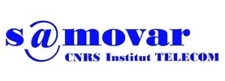
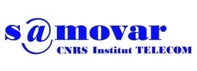
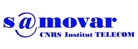

Data Ownership and Interoperability
for a
Decentralized Social Semantic Web
Defended by Andrei Vlad SAMBRA
Thesis director: Prof.Dr. Maryline LAURENT

Defended by Andrei Vlad SAMBRA
Thesis director: Prof.Dr. Maryline LAURENT

URI:https://bob.example/profile#me<keygen> element (the keys are generated locally)


All implementation software is released under the MIT license.